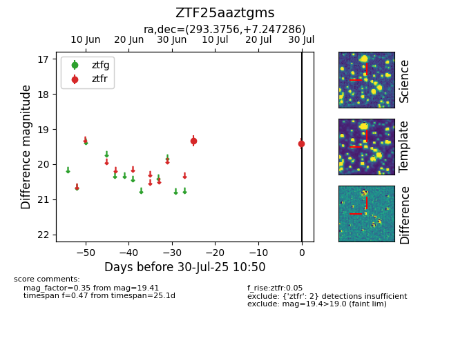

Target ZTF25aaztgms at 2025-07-30 10:50, see:
FINK: fink-portal.org/ZTF25aaztgms
Lasair: lasair-ztf.lsst.ac.uk/objects/ZTF25aaztgms
ALeRCE: alerce.online/object/ZTF25aaztgms
alt names
ZTF25aaztgms (ztf,fink)
coordinates:
equatorial (ra, dec) = (293.3756,+7.24729)
galactic (l, b) = (44.2284,-5.94726)
photometry
last ztfr=19.41
2 ztfr detections
